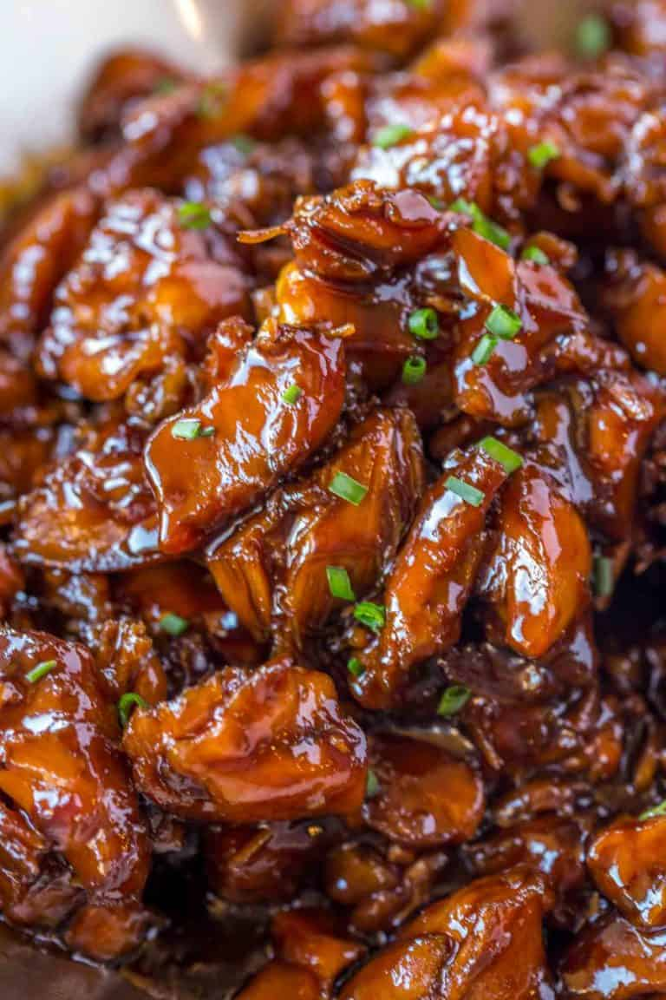

Easy Bourbon Chicken that's crispy, sweet, and tastes just like the kind you grew up eating at the mall!

Ingredients
5-6 skinless boneless chicken breasts, ~3 pounds each
3 tablespoons cornstarch divided
1/2 teaspoon salt
1/4 teaspoon black pepper
4 tablespoons canola oil
2 cloves garlic minced
1 cup water
1/2 cup apple juice
1/4 cup bourbon
1/2 cup chicken broth
2/3 cup soy sauce
1/3 cup ketchup
2 tablespoons apple cider vinegar
1 cup packed light brown sugar
1/2 teaspoon onion powder
1/2 teaspoon ground ginger
1/2 teaspoon crushed red pepper flakes
Instructions
Cut the chicken into 1 inch pieces and in a large bowl toss it with 2 tablespoons of the cornstarch, salt, and pepper.
Add 2 tablespoons of canola oil into your nonstick skillet on medium high heat and let it heat until adding the first piece of chicken sizzles.
Add half the chicken pieces and cook for 3 minutes without stirring.
Turn the chicken pieces and cook and additional three minutes.
Remove the chicken from the pan.
Use the remaining oil to cook the second half of the chicken the same way.
Remove the chicken from the pan.
Add in the garlic and cook for 20 seconds until you can just smell it.
Add in the water, apple juice, bourbon, chicken broth, lite soy sauce, ketchup, apple cider vinegar, brown sugar, onion powder, ground ginger and red pepper flakes.
Bring to a boil then add back in the chicken.
Cook for 10-15 minutes or until the sauce is reduced by about half.
Add the remaining tablespoon of cornstarch to a small glass with a tablespoon of water and stir.
Add into the pan and stir.
Cook until the sauce is thickened. Serve immediately.